<title>Пастила 1881 – концепты</title>
<meta name="claude:viewport-fit-sides" content="cover">
<link rel="preconnect" href="https://fonts.googleapis.com">
<link rel="preconnect" href="https://fonts.gstatic.com" crossorigin>
<link rel="stylesheet" href="https://fonts.googleapis.com/css2?family=Forum&family=Manrope:wght@400;600;700&display=swap">
<style>
/* Хаб концептов: спокойная рабочая витрина в цветах бренда; карточки-превью ведут на концепты. */
:root{
  --bg:#f5f6f2; --card:#ffffff; --fg:#18211b; --muted:#5c665f; --line:#dde2da;
  --brand:#206c2d; --brand-soft:#e3eee0;
  --f-disp:"Forum","Times New Roman",serif;
  --f-body:"Manrope",system-ui,-apple-system,"Segoe UI",sans-serif;
}
@media (prefers-color-scheme:dark){:root:not([data-theme="light"]){--bg:#121713;--card:#1b221d;--fg:#e9ede7;--muted:#a3ada5;--line:#2c352e;--brand:#7fc28a;--brand-soft:#223127;color-scheme:dark}}
:root[data-theme="dark"]{--bg:#121713;--card:#1b221d;--fg:#e9ede7;--muted:#a3ada5;--line:#2c352e;--brand:#7fc28a;--brand-soft:#223127;color-scheme:dark}
*{box-sizing:border-box}
body{background:var(--bg);color:var(--fg);font-family:var(--f-body);font-size:16px;line-height:1.6}
.wrap{max-width:1180px;margin:0 auto;padding-left:max(16px,env(safe-area-inset-left,0px));padding-right:max(16px,env(safe-area-inset-right,0px))}
a{color:inherit}
header.h{padding-block:44px 28px;border-bottom:1px solid var(--line)}
.h .k{font-size:13px;letter-spacing:.14em;text-transform:uppercase;color:var(--brand);font-weight:700}
.h h1{font-family:var(--f-disp);font-weight:400;font-size:clamp(34px,5vw,58px);line-height:1.05;margin:10px 0 12px;text-wrap:balance}
.h p{margin:0;max-width:68ch;color:var(--muted)}
.meta{display:flex;flex-wrap:wrap;gap:8px;margin-top:18px}
.meta span{font-size:13px;background:var(--brand-soft);color:var(--brand);border-radius:999px;padding:4px 12px;font-weight:600}
h2{font-family:var(--f-disp);font-weight:400;font-size:clamp(26px,3vw,36px);margin:0 0 18px}
section{padding-block:40px}
.grid{display:grid;grid-template-columns:repeat(2,minmax(0,1fr));gap:22px}
.c{background:var(--card);border:1px solid var(--line);border-radius:16px;overflow:hidden;display:flex;flex-direction:column;text-decoration:none;transition:transform .2s,box-shadow .2s}
.c:hover{transform:translateY(-3px);box-shadow:0 18px 40px -24px rgba(0,0,0,.35)}
.c:focus-visible{outline:3px solid var(--brand);outline-offset:3px}
.shot{position:relative;background:var(--line)}
.shot img{display:block;width:100%;aspect-ratio:16/10;object-fit:cover}
.shot .m{position:absolute;right:14px;bottom:-26px;width:21%;max-width:96px;border-radius:12px;border:3px solid var(--card);box-shadow:0 8px 20px -10px rgba(0,0,0,.5);aspect-ratio:195/422;object-fit:cover}
.b{padding:20px 20px 22px;display:flex;flex-direction:column;gap:8px;flex:1}
.n{font-size:12px;letter-spacing:.12em;text-transform:uppercase;color:var(--muted);font-weight:700}
.n b{color:var(--brand)}
.c h3{font-family:var(--f-disp);font-weight:400;font-size:28px;line-height:1.1;margin:0;padding-right:100px}
.c p{margin:0;color:var(--muted);font-size:15px}
.sw{display:flex;gap:6px;margin-top:6px;align-items:center}
.sw i{width:22px;height:22px;border-radius:50%;border:1px solid rgba(0,0,0,.12)}
.sw span{font-size:13px;color:var(--muted);margin-left:8px}
.open{margin-top:auto;padding-top:10px;font-weight:700;color:var(--brand)}
.two{display:grid;grid-template-columns:1fr 1fr;gap:22px}
.box{background:var(--card);border:1px solid var(--line);border-radius:16px;padding:24px}
.box h3{margin:0 0 10px;font-size:17px}
.box ul{margin:0;padding-left:18px;display:grid;gap:6px}
.box li{color:var(--fg)}
.box li span{color:var(--muted)}
.pal{display:flex;flex-wrap:wrap;gap:10px;margin-top:14px}
.pal div{display:flex;align-items:center;gap:8px;font-size:13px;color:var(--muted);font-variant-numeric:tabular-nums}
.pal i{width:28px;height:28px;border-radius:8px;border:1px solid rgba(0,0,0,.1)}
.steps{counter-reset:s;list-style:none;padding:0;margin:0;display:grid;gap:12px}
.steps li{counter-increment:s;display:grid;grid-template-columns:34px 1fr;gap:10px;align-items:start}
.steps li::before{content:counter(s);width:28px;height:28px;border-radius:50%;background:var(--brand);color:var(--card);display:grid;place-items:center;font-weight:700;font-size:14px}
footer{padding-block:30px 50px;color:var(--muted);font-size:13px;border-top:1px solid var(--line)}
@media (max-width:820px){.grid,.two{grid-template-columns:1fr}.c h3{font-size:24px}}
</style>

<header class="h">
  <div class="wrap">
    <div class="k">pastila1881.com · редизайн главной</div>
    <h1>Белёвская пастила: восемь концептов главной</h1>
    <p>В каждом концепте шапка и первые четыре экрана. Всё кликается и собрано под телефон. Тексты и цифры взяты с текущего сайта, из интервью об истории и из Instagram @pastila1881, ничего не придумано. Фото – из их ленты и с сайта.</p>
    <div class="meta"><span>1–2 оставлены</span><span>3–8 новые</span><span>десктоп + телефон</span><span>19.10.2026, вторая итерация</span></div>
  </div>
</header>

<section>
  <div class="wrap">
    <h2>Концепты</h2>
    <div class="grid">
      <a class="c" href="c1-letopis.html">
        <div class="shot">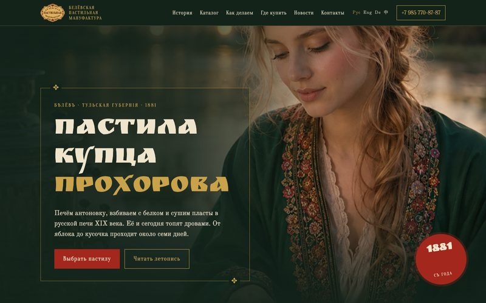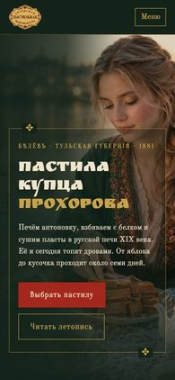</div>
        <div class="b"><div class="n"><b>1</b> · оставлен · история Руси</div><h3>Летопись</h3>
        <p>Купец Прохоров, царский стол, поставки в Тифлис, Варшаву и Ригу. Вязь, киноварь, золото, рамки-обереги, «Рецептъ» с пропорциями 1881 года.</p>
        <div class="sw"><i style="background:#13231a"></i><i style="background:#c9a24a"></i><i style="background:#a3271c"></i><i style="background:#efe4cc"></i><span>Ruslan Display + Old Standard</span></div>
        <span class="open">Открыть →</span></div>
      </a>
      <a class="c" href="c2-insta.html">
        <div class="shot">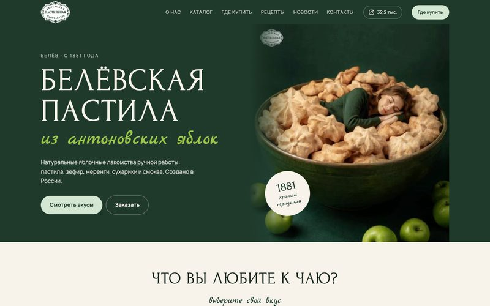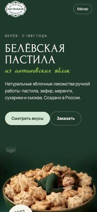</div>
        <div class="b"><div class="n"><b>2</b> · оставлен · из Instagram</div><h3>Как в ленте</h3>
        <p>Бутылочный зелёный и мята из их постов, прописные антиквой и рукописный акцент. Категории кружками, как хайлайты, ленточки «Новости компании».</p>
        <div class="sw"><i style="background:#1f3a2b"></i><i style="background:#d4e7d2"></i><i style="background:#9cc54a"></i><i style="background:#d7405a"></i><span>Forum + Marck Script</span></div>
        <span class="open">Открыть →</span></div>
      </a>
      <a class="c" href="c3-izrazec.html">
        <div class="shot">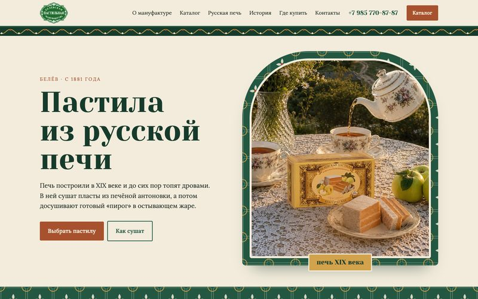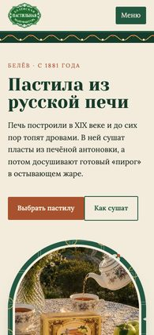</div>
        <div class="b"><div class="n"><b>3</b> · новый · русская печь</div><h3>Изразец</h3>
        <p>Пастилу сушат в русской печи XIX века, и сайт одет в печные изразцы. Первый экран – печное чело с фото, каталог в изразцовых рамках.</p>
        <div class="sw"><i style="background:#235741"></i><i style="background:#f3ecdc"></i><i style="background:#a8512e"></i><i style="background:#d2a24c"></i><span>Yeseva One + Lora</span></div>
        <span class="open">Открыть →</span></div>
      </a>
      <a class="c" href="c4-modern.html">
        <div class="shot">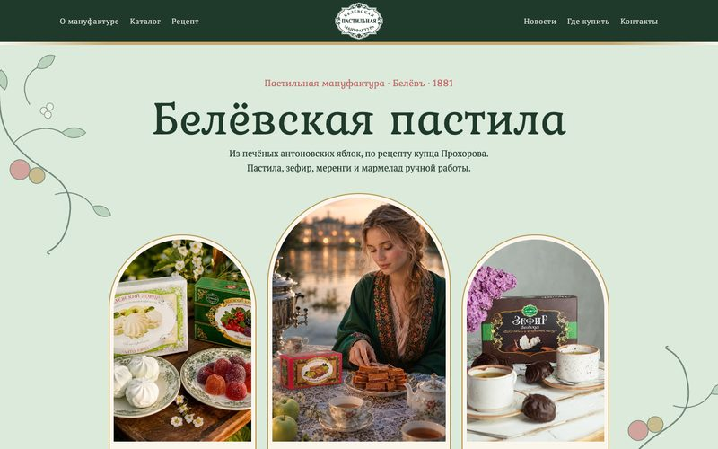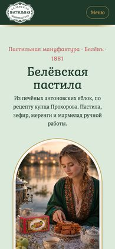</div>
        <div class="b"><div class="n"><b>4</b> · новый · модерн 1900-х</div><h3>Модерн</h3>
        <p>Как кондитерская упаковка начала века: три арочных окна с фото, ветви яблони, золотые медальоны, рецепт в арке.</p>
        <div class="sw"><i style="background:#dbeadb"></i><i style="background:#1f3a2b"></i><i style="background:#b8964f"></i><i style="background:#c96a6a"></i><span>Kurale + PT Serif</span></div>
        <span class="open">Открыть →</span></div>
      </a>
      <a class="c" href="c5-vyveska.html">
        <div class="shot">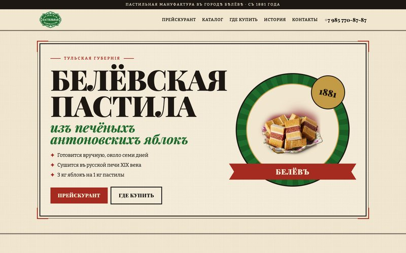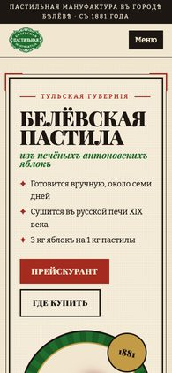</div>
        <div class="b"><div class="n"><b>5</b> · новый · реклама и прейскурант</div><h3>Вывеска</h3>
        <p>Плакат 1900-х с медалью и лентой «Белёвъ», прейскурант с отточиями (без цен), ярлыки №1–4, «Гдѣ купить».</p>
        <div class="sw"><i style="background:#f1e6cf"></i><i style="background:#1c1712"></i><i style="background:#a52a1f"></i><i style="background:#206c2d"></i><span>Playfair Display + Bitter</span></div>
        <span class="open">Открыть →</span></div>
      </a>
      <a class="c" href="c6-barhat.html">
        <div class="shot">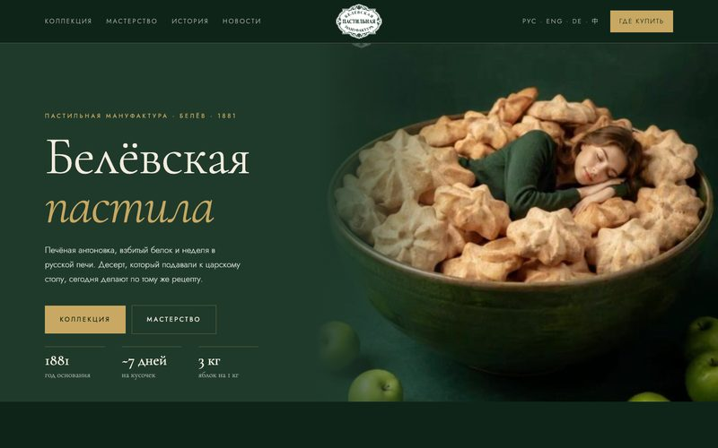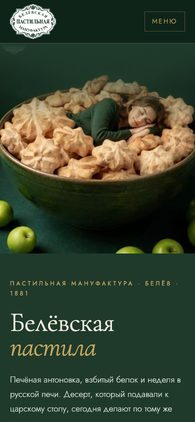</div>
        <div class="b"><div class="n"><b>6</b> · новый · премиальный дом</div><h3>Бархат</h3>
        <p>Глубокий зелёный и золотые линии, крупная фотография продукта, коллекция лентой, блок «Мастерство», подарки.</p>
        <div class="sw"><i style="background:#0f2419"></i><i style="background:#1f3a2b"></i><i style="background:#c8a862"></i><i style="background:#f2ecdf"></i><span>Cormorant Garamond + Jost</span></div>
        <span class="open">Открыть →</span></div>
      </a>
      <a class="c" href="c7-otkrytki.html">
        <div class="shot">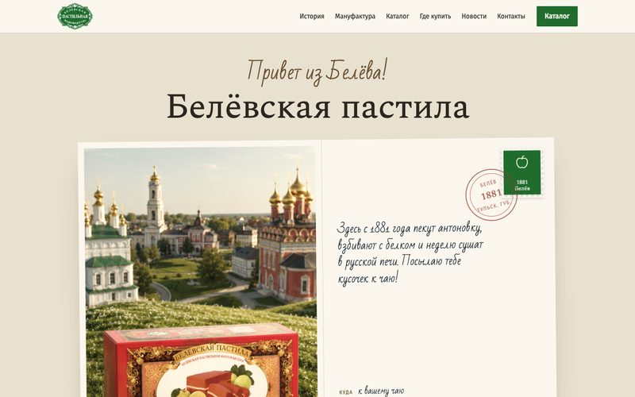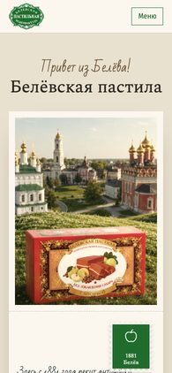</div>
        <div class="b"><div class="n"><b>7</b> · новый · место и история</div><h3>Открытки из Белёва</h3>
        <p>Двусторонняя открытка: Белёв на лицевой стороне, на обороте рукописное письмо, марка и штемпель 1881. История – три открытки.</p>
        <div class="sw"><i style="background:#e9e1cf"></i><i style="background:#fbf7ee"></i><i style="background:#206c2d"></i><i style="background:#9b3a2a"></i><span>Spectral + Bad Script</span></div>
        <span class="open">Открыть →</span></div>
      </a>
      <a class="c" href="c8-rospis.html">
        <div class="shot">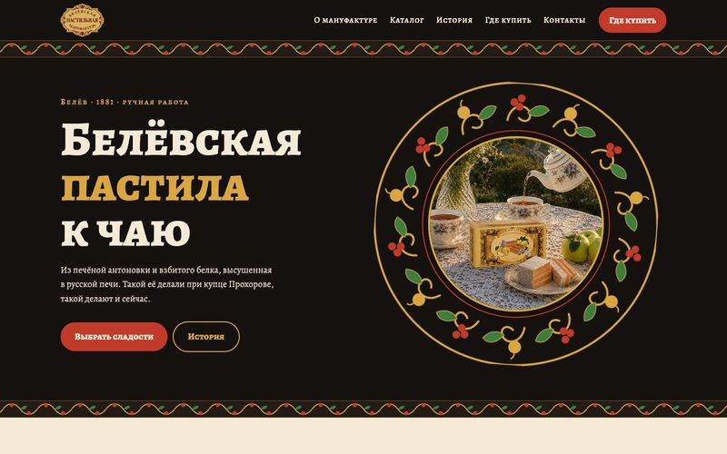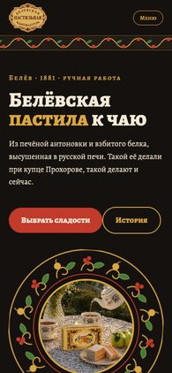</div>
        <div class="b"><div class="n"><b>8</b> · новый · народная роспись</div><h3>Роспись</h3>
        <p>Чёрный лак, киноварь и золото. Продукт на расписных подносах, орнамент из яблок, ягод и завитков свой, рисуется кодом.</p>
        <div class="sw"><i style="background:#15110e"></i><i style="background:#c13a2a"></i><i style="background:#d9a640"></i><i style="background:#3f7d3a"></i><span>Alegreya SC + Alegreya</span></div>
        <span class="open">Открыть →</span></div>
      </a>
    </div>
  </div>
</section>

<section>
  <div class="wrap two">
    <div class="box">
      <h3>Что взяли с сайта и из истории</h3>
      <ul>
        <li>Меню: о компании, каталог, где купить, география, новости, награды, контакты; языки RU / EN / DE / 中</li>
        <li>10 разделов каталога: пастила, без сахара, с ягодами, меренга, мармелад, зефир, сухарики, смоква, СТМ, пастилки</li>
        <li>Составы и КБЖУ 16 товаров с главной</li>
        <li>История: 1881, купец Амвросий Прохоров, печь XIX века на дровах, 3 кг яблок + 100 г сахара + 1 белок → 1 кг, ~7 дней, мануфактура с 2010</li>
        <li>Где купить: Москва 100+ магазинов, Сочи 2, Ростов-на-Дону 1; pastila.eu для Европы</li>
        <li>+7 985 770-87-87, пн–пт 9–19, pastila1881@yandex.ru, Белёв, ул. Рабочая, 134</li>
      </ul>
    </div>
    <div class="box">
      <h3>Что взяли из Instagram @pastila1881</h3>
      <ul>
        <li>32,2 тыс. подписчиков, 1 854 публикации; разобрали 120 последних постов</li>
        <li>Новинки, которых нет на сайте: «Кусочек», меренги в стаканчике, подарочная мятная коробка</li>
        <li>Каналы продаж: Wildberries, Flowwow, Telegram t.me/belpastila</li>
        <li>Подача: прописные антиквой + рукописная строка, ленточки «Новости компании», фото на зелёном и в саду</li>
      </ul>
      <div class="pal">
        <div><i style="background:#1f3a2b"></i>#1f3a2b</div><div><i style="background:#206c2d"></i>#206c2d логотип</div><div><i style="background:#d4e7d2"></i>#d4e7d2</div><div><i style="background:#f7f3ea"></i>#f7f3ea</div><div><i style="background:#d7405a"></i>#d7405a</div>
      </div>
    </div>
    <div class="box">
      <h3>Что мешает на текущем сайте</h3>
      <ul>
        <li>Шаблон 2017 года, предупреждение для Internet Explorer в коде</li>
        <li>Пустые description и keywords у главной</li>
        <li>Последняя новость – январь 2023, сайт выглядит заброшенным</li>
        <li>Адреса вида /good/13 и /catalog/1, без ЧПУ</li>
        <li>Абзац в блоке «храним традиции» повторён дважды</li>
        <li>Нет ссылок на Instagram, Telegram и Wildberries; в подвале работает только ВКонтакте</li>
        <li>Фото товаров 225–290 px, мелкие и размытые на новых экранах</li>
      </ul>
    </div>
    <div class="box">
      <h3>Дальше</h3>
      <ol class="steps">
        <li><span>Выбрать 1–2 направления, можно смешать (например, 1 + 3).</span></li>
        <li><span>Карта сайта с ЧПУ и 301 со старых адресов – до вёрстки.</span></li>
        <li><span>Вёрстка на Astro, ролик о производстве на первый экран, свежие фото товаров.</span></li>
      </ol>
      <p style="margin:14px 0 0;color:var(--muted);font-size:14px">Видео из рилсов в концепты не встало: Instagram не отдал файлы. Ролик о производстве подключим при вёрстке.</p>
    </div>
  </div>
</section>
<footer><div class="wrap">Концепты для обсуждения. Фото принадлежат «Белёвской пастильной мануфактуре». Орнаменты, марки и узоры нарисованы для концептов.</div></footer>
